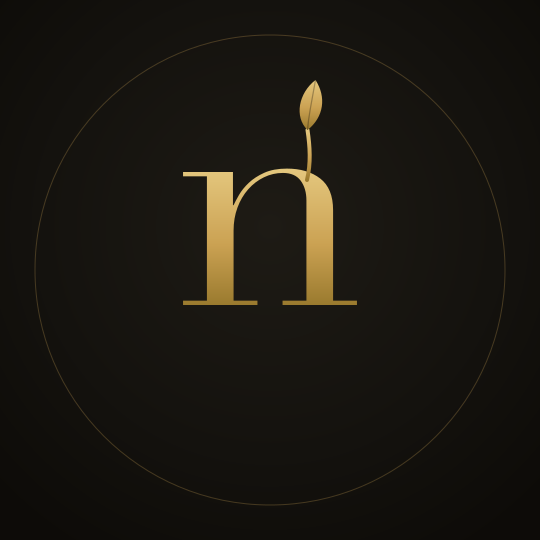
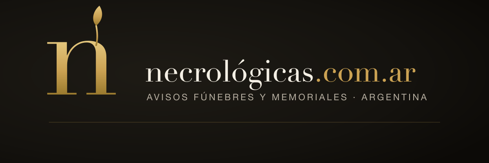
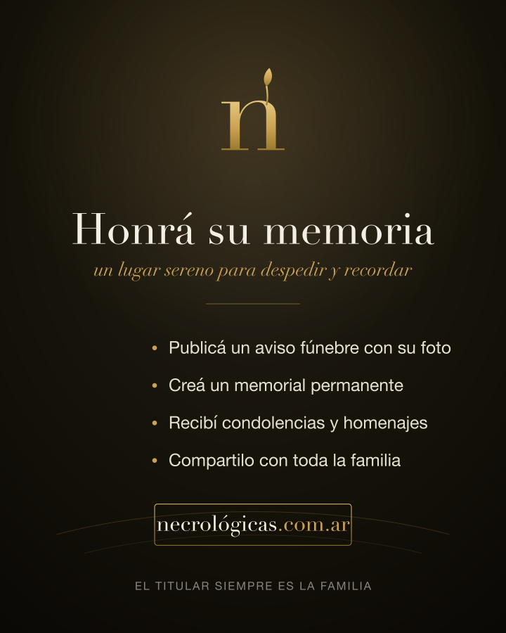

Opciones de logo para necrológicas.com.ar, en dorado antiguo sobre carbón.
Registro sobrio-premium: digno y sereno, sin caer en lo macabro. Elegí una y la dejo lista para subir.
Opciones de la n
Seis caminos. Decime el número que más te gusta (o una mezcla).
1 · Serenaclásica pura
2 · Brotememoria viva
3 · Umbralpórtico sereno
4 · Sellomonograma en círculo
5 · Alapaloma abstracta
6 · Amanecerhorizonte de luz
Cómo se ve aplicada
Ejemplo con la variante Brote (mi recomendación), ya lista para usar.
Foto de perfil · Instagram

Banner · portada de Facebook

Flyer nuevo · sobrio-luminoso, sin corona ni vela

Cómo seguimos
1
Elegís el númerode la n que más te gusta (o una mezcla).
2
Afino y vectorizo la elegida— PNG cuadrado para perfil + versión horizontal, en dorado sobre carbón y en negro sobre claro.
3
Reemplazás la foto de perfilprovisoria por la n definitiva y subo el banner a Facebook.
4
El flyer nuevoqueda como primera publicación, alineado a la campaña ya firmada.
Nada se pauta ni se paga sin tu OK presencial — esto es identidad, no gasto.